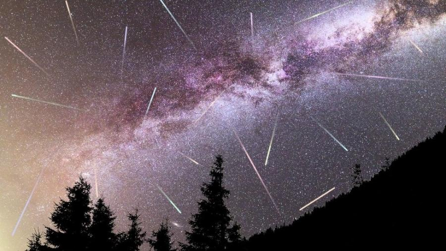

Semana Santa

A Igreja abre, no próximo domingo, com a celebração dos Ramos da Paixão do Senhor, a Semana Santa. Nela está o ápice do Ano Litúrgico e momento central da fé católica: o Tríduo Pascal. Nesta semana, a Liturgia do Domingo de Ramos visa recordar a Paixão de Cristo, desde sua entrada messiânica em Jerusalém. Nos primeiros dias da Semana Santa, as leituras consideram o mistério da paixão. Na Missa do Crisma, as leituras sublinham a função messiânica de Cristo e sua continuação na Igreja, por meio dos sacramentos. Já o Tríduo, que tem início na quinta-feira, culmina com a vitória de Cristo sobre a morte. Os subsídios “Igreja em Oração” e “Semana Santa 2025“, oferecidos pela Edições CNBB para conduzir as comunidades no seu caminho rumo à Páscoa, apresentam os pontos centrais da celebração de cada dia. O arcebispo-bispo de Cachoeiro do Itapemirim (ES), dom Luiz Fernando Lisboa, situa a celebração da Semana Santa neste Jubileu 2025:
Sobre o Tríduo Pascal, ele salienta aquilo que cada celebração realiza nos cristãos:
As incríveis chuvas de meteoros que poderão ser observadas do Brasil
Astrônomos ouvidos pela BBC News Brasil destacam cinco fenômenos popularmente conhecidos como ‘estrelas cadentes’ que poderão ser vistos nos céus de nosso país.
As populares "estrelas cadentes" rasgam o céu durante a madrugada e garantem um belo espetáculo para quem decidir dormir tarde — ou acordar cedo — para observá-las. Conhecidos oficialmente como chuvas de meteoros, esses fenômenos têm data para acontecer — e alguns deles são mais visíveis em certas partes do globo, a depender da posição das constelações no céu, a ausência de nuvens e a fase da Lua naquela determinada noite. Astrônomos ouvidos pela BBC News Brasil destacam cinco chuvas de meteoros que valem a pena ser observadas a partir do Hemisfério Sul: a Eta-Aquáridas, a Delta-Aquáridas do Sul, a Geminídeas, a Oriônidas e a Leônidas. Mas quando elas vão acontecer? E qual a melhor maneira de vê-las? Confira no guia abaixo as principais informações sobre esses eventos astronômicos. Chuva de meteoros deixa trilhas no céu em SC em três dias seguidos O que são chuvas de meteoros? Os meteoros nada mais são do que o rastro dos cometas — grandes objetos feitos de poeira e gelo que surgiram a partir da formação do Sistema Solar há 4,6 bilhões de anos. "Os cometas têm uma órbita ao redor do Sol que é muito mais demorada e alongada. Essas pedras de gelo ficam muito afastadas, na periferia do Sistema Solar", explica o astrônomo Thiago Signorini Gonçalves, diretor do Observatório do Valongo da Universidade Federal do Rio de Janeiro. "As órbitas deles são alteradas de tal forma que eles são 'jogados' na direção do Sol. Mas daí o Sol funciona quase como um estilingue, que acelera os cometas de volta e os arremessa onde estavam anteriormente", complementa o especialista. A chuva de cometas Eta-Aquáridas sobre a qual falaremos em detalhes adiante, por exemplo, está relacionada ao famoso cometa Halley. Mas o importante aqui é que, nessa longa viagem, os cometas soltam detritos e poeira — os ingredientes básicos da chuva de meteoros. Lembra que a Terra realiza a translação, ou a órbita ao redor do Sol que dura pouco mais de 365 dias? Pois em algum momento dessa trajetória, nosso planeta atravessa um determinado lugar do espaço e entra em contato com os detritos deixados pela passagem do cometa justamente ali. Essa poeira entra na atmosfera — numa faixa de altura que varia entre 80 e 120 km da superfície terrestre — e passa por um processo conhecido como abrasão. "Esses pequenos objetos sofrem um choque com as moléculas da atmosfera e se iluminam por causa de uma reação termodinâmica, em que a energia da velocidade é transformada em calor e luz", detalha o astrônomo Marcelo De Cicco, coordenador do projeto Exoss, que está ligado ao Observatório Nacional e faz o monitoramento de meteoros. E é justamente essa "luz em movimento" que pode ser observada a olho nu — e ganha o nome de "estrela cadente" ou chuva de meteoros. Vale destacar aqui que esses objetos são bem pequenos, então a maioria se desintegra ao entrar em contato com a atmosfera. Algumas dessas pedrinhas até "sobrevivem" a esse processo e caem na superfície da Terra. Nesse caso, elas são chamadas de meteoritos. As melhores chuvas de meteoros para ver a partir do Brasil De Cicco destaca cinco fenômenos do tipo que são interessantes de observar a partir da perspectiva do Hemisfério Sul e do Brasil.
Os nomes dessas chuvas estão relacionados ao radiante, ou ao lugar onde essas chuvas de meteoros parecem "brotar" no céu.
Política e Economia
Casa Branca divulga documento com tarifa de 245% para chineses, causa confusão e atualiza texto
Primeira versão de documento não explicava como os EUA chegaram ao cálculo, mas foi atualizado para esclarecer que a taxa será aplicada sobre produtos específicos.
Um comunicado no site oficial da Casa Branca, dos Estados Unidos, informava nesta terça-feira (15) que a China encararia tarifas de até 245% como resultado das "ações retaliatórias" do país asiático. O documento não explicava como os EUA chegaram ao cálculo, mas foi atualizado para esclarecer que a taxa será aplicada sobre produtos específicos.
Congresso e STF analisam alternativa à proposta de anistia que reduz pena de réus de menor importância do 8/1
Projeto de lei no Senado diminuiria de 1/6 a 1/3 a pena de réus de executores dos atos golpistas. Bolsonaro e outros acusados de liderar a tentativa de golpe não seriam beneficiados.
A cúpula do Congresso e ministros do Supremo Tribunal Federal (STF) estão analisando uma alternativa à proposta de anistia que está na Câmara. A ideia é aprimorar a lei existente, reduzindo a pena de réus de menor importância condenados pelos atos golpistas de 8 de janeiro. A atual lei de golpe de Estado não permite diferenciar financiadores, organizadores e líderes dos demais réus de menor importância. Caso, por exemplo, de Débora Rodrigues dos Santos, condenada a 14 anos por participar dos ataques antidemocráticos em Brasília e pichar a estátua da Justiça. O blog obteve informações com fontes no STF e do Congresso de que o caminho negociado seria a aprovação de um projeto de lei para diminuir de 1/6 a 1/3 a pena de réus de menor importância. O mesmo projeto criaria uma motivação para aumentar a pena dos líderes da tentativa de golpe.
Justiça do Reino Unido decide que definição legal de mulher se refere ao sexo biológico
De acordo com o jornal 'New York Times', essa decisão pode ter consequências de longo alcance sobre como a lei é aplicada a espaços de gênero único, reivindicações de igualdade salarial e políticas de maternidade.
A Suprema Corte do Reino Unido decidiu na quarta-feira (16) que mulheres trans não se enquadram na definição legal de mulheres segundo a legislação de igualdade do país. O julgamento histórico afirmou que a definição legal de mulher é baseada no sexo biológico. De acordo com o jornal “New York Times”, essa decisão pode ter consequências de longo alcance sobre como a lei é aplicada a espaços de gênero único, reivindicações de igualdade salarial e políticas de maternidade. A ação ocorre após anos de batalha jurídica sobre se mulheres transgênero podem ser consideradas mulheres sob a Lei da Igualdade britânica de 2010, que visa prevenir a discriminação.
Dólar despenca mundialmente após Trump anunciar que pensa em demitir diretor do banco central americano
Moeda é desvalorizada globalmente como consequência das tentativas de Trump de intervir no Fed. Na última sexta (18), a Casa Branca anunciou que avalia se pode demitir Jerome Powell, alvo de Trump.
O dólar despencou nesta segunda-feira (21), à medida que a confiança dos investidores na economia dos Estados Unidos caiu após o presidente Donald Trump revelar seus planos de intervir no Federal Reserve (o Fed, banco central amerciano), o que impactaria a independência do banco. O dólar caiu para o menor nível em uma década frente ao franco suíço, o euro (EUR=EBS) alcançou US$ 1,15 o nível mais alto desde novembro de 2021. Enquanto o dólar neozelandês voltou ao nível de US$ 0,6000 pela primeira vez em mais de cinco meses. O dólar também atingiu uma mínima de sete meses frente ao iene, a 140,615 ienes (JPY=EBS). Dados da CFTC mostraram que as posições líquidas compradas em iene japonês atingiram um recorde na semana encerrada em 15 de abril.
Com tarifaço, Brasil pode ser grande destino de produtos chineses, mas precisará de preparo
Especialistas ouvidos pelo g1 dizem que chineses já queriam novos mercados antes das tarifas de Donald Trump. Indústria nacional precisa de investimentos pois ainda não consegue competir em termos de tecnologia e produtividade.
A guerra tarifária entre China e Estados Unidos movimentou intensamente os mercados financeiros nas últimas semanas, mas os efeitos não se limitam aos investimentos. O comércio mundial também deve ser afetado. As altas tarifas impostas pelos EUA sobre a China "apenas aceleram um processo que já estava em andamento: a busca por novos mercados", explica Vitor Moura, fundador da Lantau Business Answers, consultoria brasileira especializada em intermediação de negócios entre Brasil e China, e especialista da rede Observa China.
Por que decisão da China de restringir exportação de terras raras é duro golpe para EUA
A China detém quase o monopólio da produção e refino de terras raras. Mas o que são estes minerais e como a restrição da sua exportação para os Estados Unidos pode prejudicar a indústria e a economia do país?
À medida que se intensifica a guerra comercial entre a China e os Estados Unidos, vêm chamando a atenção os níveis cada vez mais altos de tarifas impostas pelos dois países às importações mútuas. Mas a criação de tarifas de importação recíprocas sobre os produtos americanos não é a única forma de retaliação disponível para Pequim. A China também criou controles de exportação sobre uma série de minerais críticos, terras raras e ímãs, o que representa um golpe considerável para os Estados Unidos. A decisão expôs como os americanos dependem desses minerais. Nesta semana, o presidente americano Donald Trump ordenou que o Departamento do Comércio dos Estados Unidos identificasse formas de ampliar a produção nacional de minerais críticos e reduzir a dependência das importações. É uma tentativa de Washington de recuperar essa indústria fundamental.